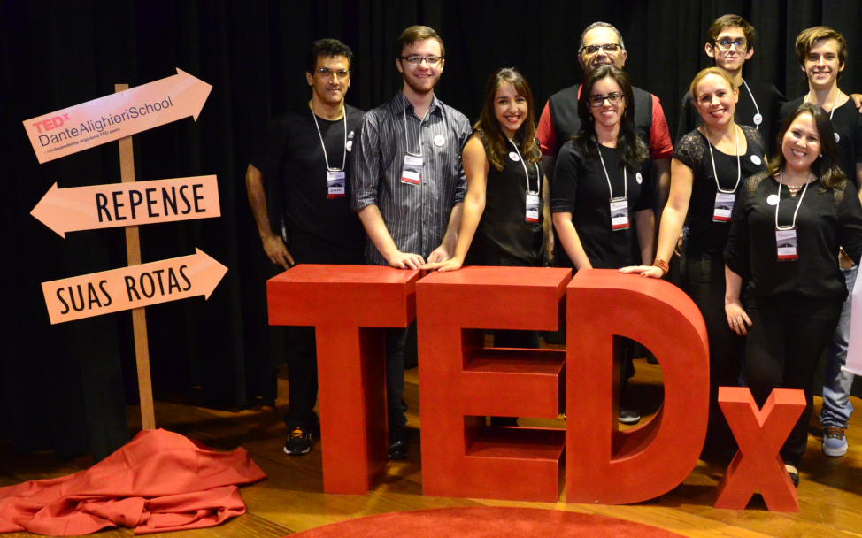

01 de Maio de 2025
Reunido a família em casa para comemorar meus 62 anos.
Uma coleção de memórias, sorrisos e conquistas guardadas com carinho.
Reunido a família em casa para comemorar meus 62 anos.

Na Valda: Gabriele, Isabele, Anastácio, Valda, Eu, Damiana, João, Júlia, Letícia e Cosminha.

Encontrei tio Gonzaga pela primeira vez em 2003 eu com 40 anos de idade e ele aos 75 anos, foi uma grande satisfação em conhecê-lo pois minha mãe sempre falava nele. Quando nasci ele tinha ido para o Rio de Janeiro e quando retornou, eu tinha ido para São Paulo, na foto foi a última vez que o vi, pois faleceu no início de 2025 aos 96 anos. Tinha uma conversa muito agradável e eu tinha liberdade para conversar sobre qualquer assunto com ele. Deixou saudades.

No Paulo: Eu, Damiana, Júlia, João, Mrli, Paulo, Letícia e Cosminha.

Na Diva: Damiana, Luci, Eu, Diva e Raimundo.

Fui surpreendido no meu aniversário de 60 anos! Fomos até a casa da Liliane e, ao chegarmos lá, ela me pediu para ir até o salão de festas buscar algo. Para minha surpresa, o local estava todo decorado para a comemoração. Levei um susto! Adorei a surpresa e fiquei muito feliz.

É sempre uma grande felicidade para mim receber meus filhos, maravilhoso estar com as pessoas que amo.

Eu, Valda, Gabriele, Isabele, Cosminha, Thiago, Thaynar, Damiana e Vinicius.

Na Leni - da direita para a esquerda: Tiago, Leni, Teresa, Cosminha, Antonio, Eu, Damiana e Taynar.

Da esquerda para a direita: Thiago, Cosminha, Eu, Tia Luizinha, Damiana, Vinicius, Thainar, minha prima, Cilene e Teresa.

Meus filhos Liliane e Rodrigo, meu genro Rodrigo, minha nora Renata e meu neto Gustavo no nosso casamento eu e Teresa

Em Ubatuba 2016 - Irene, Eu, Letícia, Francisco e Camila.

Pedal de São Paulo a Santos-SP, um grande marco esportivo.

Pedal muito especial realizado com o Rodrigo.

Casamento da Liliane em julho de 2010.

Um registro inesquecível com minha querida Mãe.

Passeio de bicicleta divertido ao lado dos meus queridos filhos.

Em Aparecida do Norte - Eu, Cido, Liliane e Rodrigo.


Na primeira foto (direita p/ esquerda): Sr. Albano, Milcia, Eu e Rita Sarico. Na segunda foto: Luiz Bernaldo, Cosminha, Damiana, Eu e João.


Eu e João em 1994. Na outra imagem (bem mais antiga), não lembro exatamente a data nem o nome de todas as pessoas presentes.


No SESC Itaquera, na outra foto em casa


Foto da esquerda: Club Atletico Paulistano. Foto da direita: Colégio Dante Alighieri.
Os refúgios verdes que fazem parte do meu dia a dia na capital paulista.


O Parque Villa-Lobos é um amplo e moderno parque urbano de São Paulo, localizado na zona oeste da cidade, às margens do rio Pinheiros. Inaugurado em 1994, ele é conhecido por seus grandes espaços abertos, pela vocação esportiva e pela facilidade de acesso, sendo muito frequentado por famílias, atletas e ciclistas. Na primeira foto, eu e Liliane com Gustavo e Gabriele, e na segunda foto, eu e Teresa.


O Parque da Independência, inaugurado em 1989, nas margens do córrego do bairro do Ipiranga, na cidade de São Paulo, faz parte do patrimônio histórico cultural brasileiro devido ao Grito da Independência do país. Na primeira foto, eu e Teresa, e ao fundo o jardim do Museu do Ipiranga, e na segunda foto, Teresa, Diogo, eu, Greusa e Sr. Marcelino.


Este é o mais antigo e tradicional parque público da cidade. Localizado em frente à estação da Luz do metrô, na região central de São Paulo. Foi o primeiro parque que frequentei quando cheguei aqui em São Paulo, e é um lugar que me traz muitas lembranças especiais. Na primeira foto, Teresa, e na segunda foto, eu e Arnaldo.


.jpg)